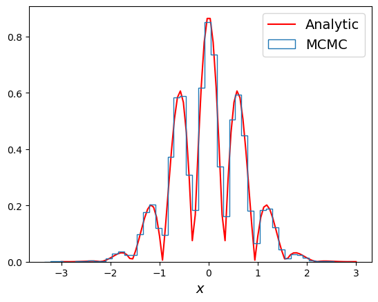
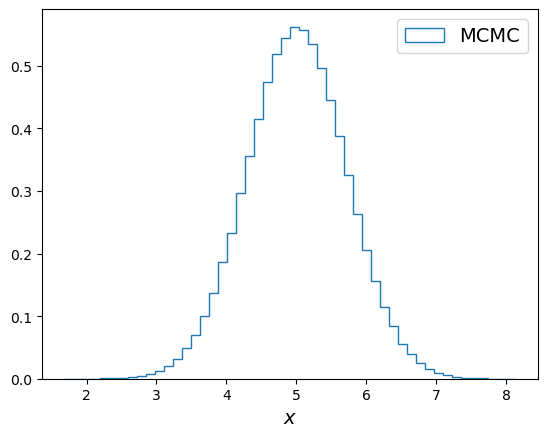
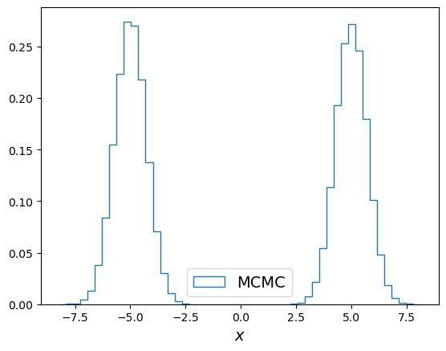
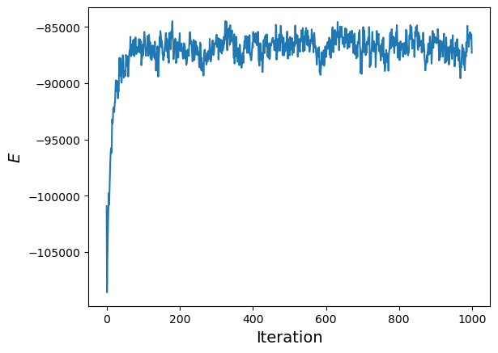
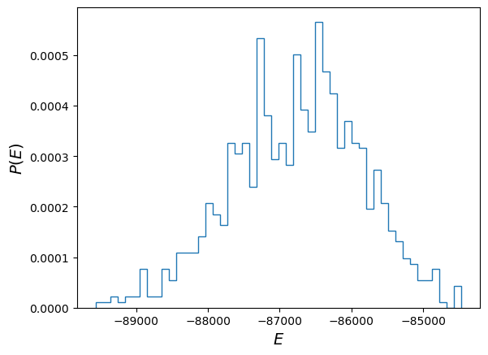
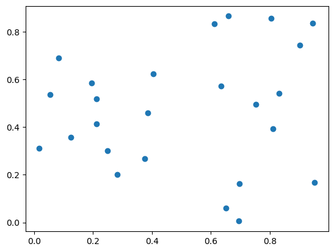

Markov Chain Monte Carlo
Markov Chain Monte Carlo
Last week, we discussed the Metropolis-Hastings algorithm for MCMC. The ingredients for the algorithm are: a proposal distribution $g(x, x_n)$, and an acceptance probability.
For Metropolis-Hastings, the acceptance probability is: $$ A(x, x_n) = \min\left(1, \frac{P(x)}{P(x_n)}\frac{g(x_n, x)}{g(x, x_n)}\right) $$
If the proposal distribution $g(x, x_n)$ is symmetric, then the acceptance probabilty reduces to $A(x, x_n) = \min(1, P(x)/P(x_n))$.
Markov Chain Monte Carlo
Let's look at the probability distribution function: $$ P(x) \propto e^{-x^2}|\cos(5x)| $$
We will choose the proposal distribution to be a normal distribution centered around $x_n$ and variance 1: $$ g(x, x_n) = N(x_n, 1) $$
Is this proposal distribution symmetric between $x$ and $x_n$?
Markov Chain Monte Carlo
This is the result with 1,000,000 samples:
Markov Chain Monte Carlo
Consider the following distribution with two widely separated peaks: $$ P(x) \propto \exp(-(x - 5)^2) + \exp(-(x + 5)^2) $$
How to choose the proposal distribution to ensure we sample both peaks?
Markov Chain Monte Carlo
Result from 1,000,000 samples and $g(x, x_n) = N(x_n, 1)$:
Markov Chain Monte Carlo
Result from 1,000,000 samples and $g(x, x_n) = N(x_n, 10)$:
2D Ising Model
Last time we talked about the energy evolution of a Markov Chain for the 2D Ising model:
2D Ising Model
Here is the energy distribution (taken after the initial burn-in phase):
Why is this different from just $P(E) \sim e^{-E/k_B T}$?
2D Ising Model
The Boltzmann distribution is the probability of finding the system at a given state, not the probability of finding the energy of the system. Multiple different states can have the same energy.
To correctly find the probability distribution of system energy $E$, one needs to account for all degeneracies in the system, i.e. count all states with the same energy $E$.
As a result, $P(E)$ can peak where many states share the same energy, even though individual states follow the Boltzmann distribution.
MCMC for Optimization
The Boltzmann distribution says that the probability of finding state $i$ is given by its energy and the system temperature. If temperature goes to zero, then the system should land at the lowest energy state.
Therefore, a computational strategy of finding the ground state of a system is to do an MCMC simulation while taking the temperature $T\to 0$.
However, the danger is that if the system gets stuck at a local minimum energy state, but temperature prematurely goes to zero, our MCMC procedure will forever stuck there (why?).
MCMC for Optimization
A rapidly cooled system can get stuck in a local energy minimum is a fact known for centuries by blacksmiths and glassworkers!
The common strategy to mitigate this effect is to heat the object to high temperatures and let it cool down slowly. This process is called annealing, which can remove internal stresses and help avoid forming defects in the final product.
Simulated Annealing
The corresponding strategy in MCMC is to initialize the system with high enough temperature $k_B T$ that it equilibriates quickly.
Then, we decrease the temperature using a "cooling schedule": $$ T = T_0e^{-t/\tau} $$
$\tau$ is the cooling time scale, and it determines the effectiveness of the method. Typically we want slow cooling, or large $\tau$. However, larger $\tau$ also means longer simulation time.
Simulated Annealing
One potential example of using MCMC as an optimization technique is the traveling salesman problem.

Simulated Annealing
Define our system energy as the total distance traveled by the salesman: $$ H = D = \sum_{i=0}^{N-1}|\mathbf{x}_{i+1}-\mathbf{x}_i| $$
Here $i$ denotes the order of the cities visited, and $\mathbf{x}$ is the position of the city. A "state" is a total order of all the cities that visit each city exactly once and return to the initial city at the end.
MCMC requires two ingredients, proposal distribution and acceptance probability. What should we use?
Simulated Annealing
A straightforward way to propose a next step is to flip a random pair of adjacent cities, $i \leftrightarrow i + 1$.
Then, this proposed next step is accepted according to a "system temperature", which we start high and decrease with a cooling schedule.
Simulated Annealing
Consider the following city configuration:
Simulated Annealing
This is how the MCMC process goes: